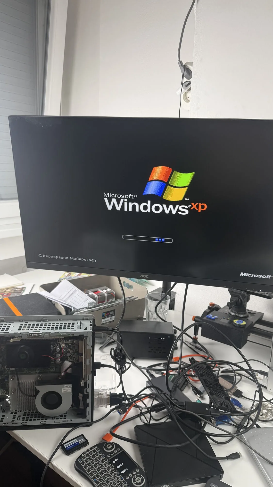
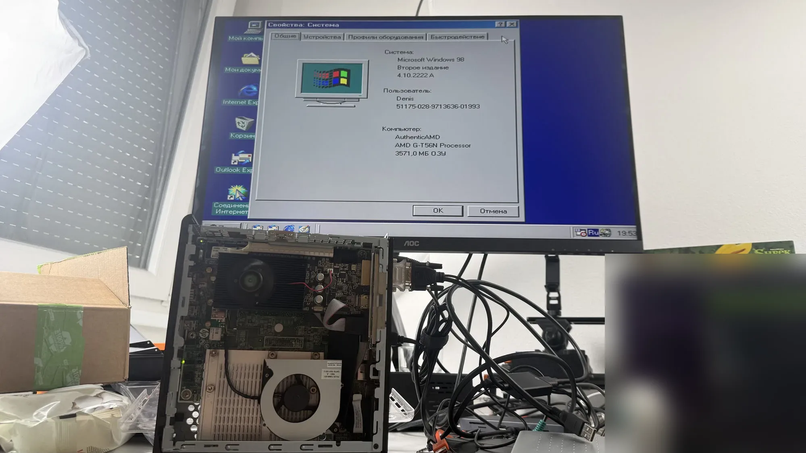

В начале прошлой недели повозился с установкой систем на свой HP T610. Приколы вылезали и там, и там, особенно с Windows 98. Но в итоге всё завелось — на XP даже все драйверы нашлись сами, включая вайфай-свисток.

На очереди Windows 7 — там проблем жду меньше всего.
Ну и ко мне приехал монитор, как можно заметить на фото.
Комментарии